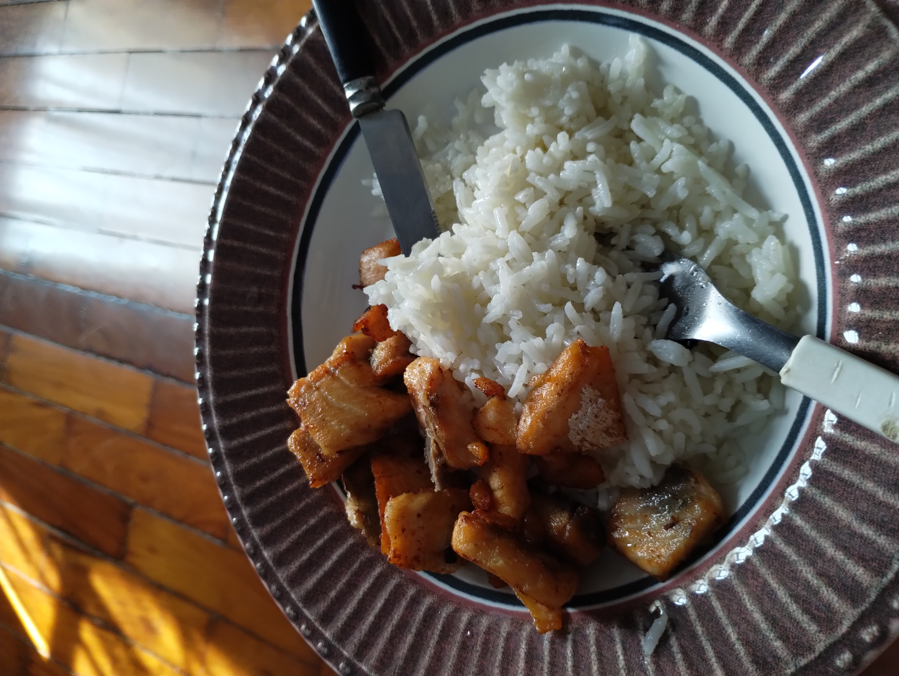

Salmon

Garlic Butter Salmon
After trying many different salmon recipes, this is by far my favorite alongside fresh rice or pasta.
Ingredients
- 200g salmon fillet
- 1 tablespoon butter
- Salt to taste
- 1 teaspoon garlic Powder
- 1 Tablespoon olive oil
Steps
- Grab the salmon and remove the skin. Cut it into small pieces.
- Sprinkle salt over the salmon and let it marinate for 15 minutes.
- Heat a pan with olive oil and butter until melted, then add the salmon.
- Sprinkle garlic powder across each individual piece and cook until golden.
- Flip each piece, but be ready to remove them soon.
- Check to see if the other side is cooked, and remove quickly to prevent overcooking.
- Place it on a plate, and serve with rice or pasta. Enjoy!
return to main page